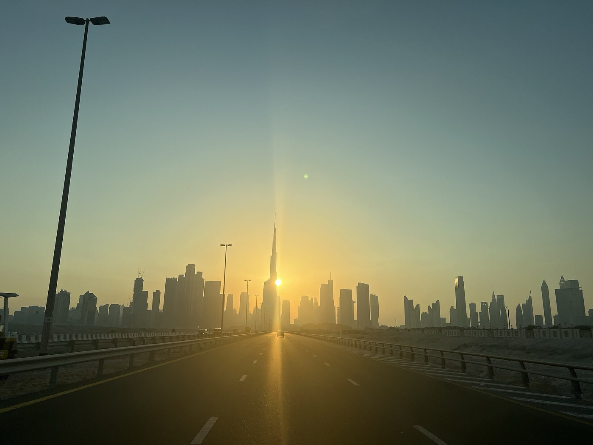
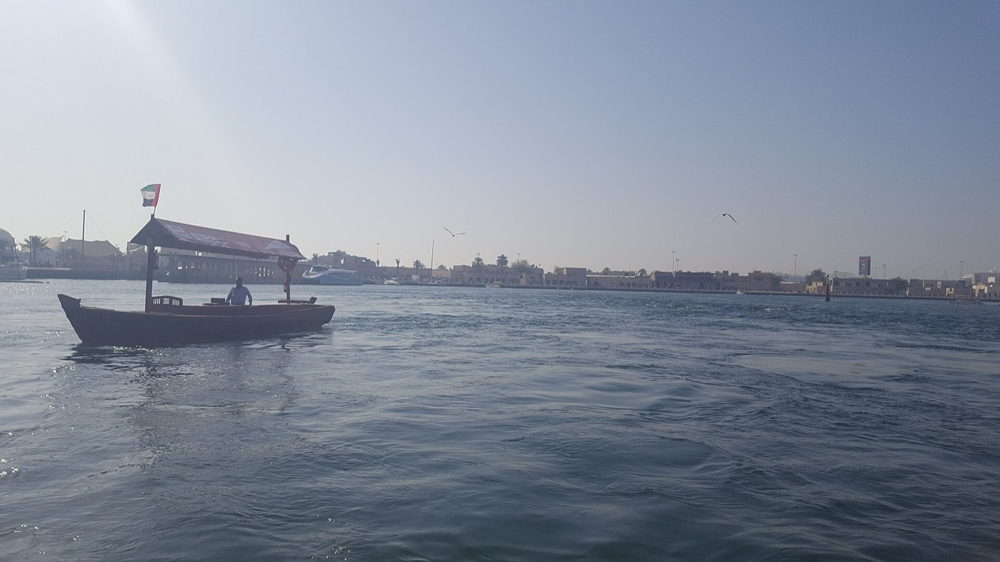
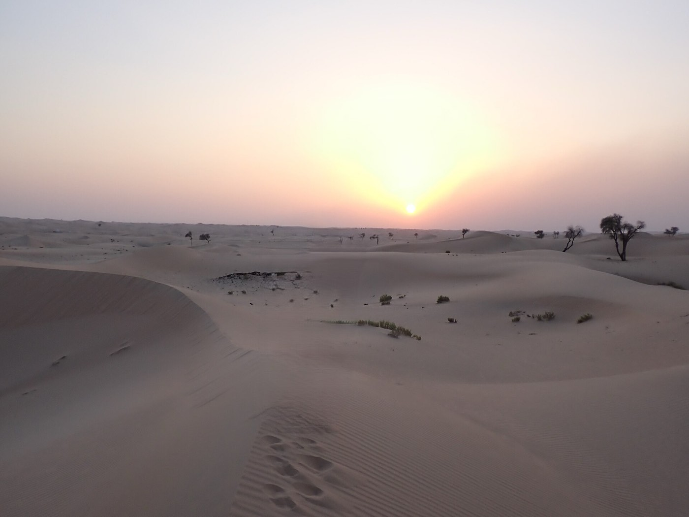
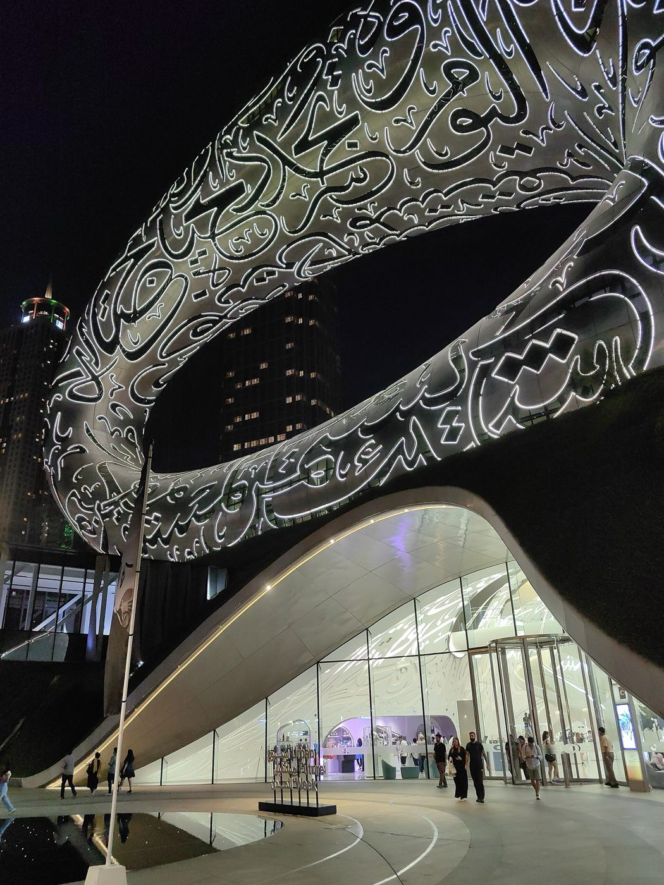

Dubai · 3 days
3 Days in Dubai: What You Actually Have to See
Dubai's map is not what decides this trip. The heat does. Step outside after mid-morning for half the year and the plan stops being about distance and starts being about how long you can stand direct sun, so the days below are built outdoor-first, indoor-through-the-heat, outdoor-again: the creek and the desert sit at the two edges of the clock, a mall or a museum fills the middle. Here's that shape, plus the two bookings that actually gate a Dubai trip.

Dubai's winter is genuinely pleasant, low twenties, but that's four months of the year. From May through September the average daily high sits near 40°C, and even in the shoulder months an ordinary midday stroll only really works for the first hour after sunrise or the last one before dark. Every outdoor plan in this itinerary respects that clock: the creek crossing in Old Dubai happens at the start of a day, the desert safari at the end of one, and the several hot hours in between move into a mall, a museum, or an air-conditioned metro carriage instead of onto a street.
That's also the order this guide follows, and it isn't the usual one. Most itineraries group by neighborhood, Old Dubai one day, Downtown the next, and end up either rushing the creek at midday or standing at the top of the Burj Khalifa at noon with nothing to see through the haze. Building the day around what the heat allows, rather than around what's geographically nearby, is what actually gets you both the souk and the skyline in decent light. Two things need booking before anything else: the Burj Khalifa's sunset slot at 'At the Top', and a timed entry to the Museum of the Future, both of which run out for the good hours well before the sights themselves stop admitting people.
The heat sets the schedule, not the map. Mornings and the hour before sunset are the only reliably comfortable hours outside for most of the year. Everything indoors, a mall, a museum, the metro, is where the hot middle of the day goes; nothing here tries to walk between neighborhoods at 1pm.
Day 1 — Old Dubai at dawn, Downtown through the heat, Burj Khalifa at sunset
Al Fahidi is the one part of the city built before air conditioning existed, and it shows: thick coral-and-gypsum walls, wind towers instead of vents, and courtyards that stay shaded well past sunrise. Walk it first, while the temperature still allows walking, and finish at the creek itself in time for an abra crossing to Deira. The abra is a small wooden ferry, costs one dirham paid in cash to the boatman, takes about five minutes, and needs no ticket or booking at all; boats run from early morning until close to midnight on demand. It's the one thing on this itinerary you can just show up for.
Deira, on the far bank, holds the Gold Souk and the Spice Souk, both worth the crossing and both best done before the mid-morning heat properly sets in. By the time it does, the plan is to already be somewhere with air conditioning: take the metro back toward Downtown and let Dubai Mall absorb the hottest hours of the day. It functions less as a shopping stop here than a logistical one, the mall connects by an air-conditioned walkway straight to the Burj Khalifa's base, so there's no outdoor stretch left before the tower.
Book the Burj Khalifa's 'At the Top' sunset slot, roughly the hour before actual sunset, as soon as your dates are fixed. It's timed entry rather than a queue, sunset slots cost more than the rest of the day and sell out days to weeks ahead in season, and there's no walk-up version of getting one. Afterward, once the sun is down and the heat has actually broken, the Dubai Fountain show outside the mall runs on the half hour and needs nothing booked at all, the one time today an outdoor stop doesn't come with a deadline attached.
The must-sees
Outdoor at both ends, air-conditioned all the way through the middle.

Day 2 — Marina and the Palm in the cool hours, the desert at the other edge
The Marina sits about 22 kilometers from Downtown, a 20 to 25 minute ride on the Red Line, far enough that folding it into yesterday's route would mean crossing the whole city twice for no reason. Walk the Marina promenade and JBR's beachfront while the morning is still cool enough for it, both are covered partway by the towers themselves and open straight onto the water, then move indoors before midday. Atlantis's aquarium or Aquaventure waterpark on the Palm both work as a way to spend the hottest hours without wasting them.
The other end of the day belongs to the desert, and it only really works as an evening plan. Pickup usually runs three to four in the afternoon, in time for dune bashing on the way out and a stretch of proper dunes right as the sun sets, then a Bedouin-style camp for a barbecue dinner, a show, and often a camel ride, with drop-off back at the hotel around nine. November through March, when the daytime heat actually breaks by late afternoon, is the easier season for it; even in summer the evening version stays the only sane time to be in the desert, since the alternative is a dune at 2pm in July. Popular evening slots fill three to five days out in peak season and around holidays, book that far ahead if your dates land there, and treat same-day booking as a fallback rather than the plan.
The must-sees
A separate pod from Downtown, reached by metro, ending at the desert instead of the creek.

Day 3 — Museum of the Future first, then whatever fits the calendar
The Museum of the Future runs on 30-minute timed slots, and the good ones, mornings, weekends, anything near a public holiday, sell out weeks in advance rather than days. Book the earliest slot you can get the moment your dates are set, then treat the visit as solving a second problem at once: arriving right when it opens means walking over before the sun gets high, and the building itself, a steel torus wrapped in Arabic calligraphy, three quotes from Sheikh Mohammed bin Rashid Al Maktoum carved across its surface, is worth seeing before the crowds arrive too.
What fills the rest of the day depends more on the calendar than the previous two did. Dubai Frame, an indoor viewing deck straddling old and new Dubai in a single frame-shaped building, works any time of year and any hour since it's fully enclosed. Alserkal Avenue's gallery warehouses in Al Quoz are the same, converted industrial units that stay cool regardless of the month. Global Village is the seasonal wildcard, it only runs roughly October through April, so confirm it's actually open before building an evening around it rather than assuming it's always there.
Close the day at Kite Beach or JBR's public beach for the last hour before sunset, the one outdoor stretch on day three that doesn't come with dune sand or a creek crossing attached, and it needs nothing booked at all.
The must-sees
Booked in the morning, improvised through the afternoon, unticketed by evening.

What to book, and how far ahead
| What | Booking window | So |
|---|---|---|
| Museum of the Future | 30-minute timed slots, no walk-up guarantee | Weekends and holidays sell out weeks ahead; book the moment your dates are fixed |
| Burj Khalifa 'At the Top' sunset slot | Timed entry, sunset priced higher than the rest of the day | Book as soon as dates are fixed; sells out days to weeks ahead in season |
| Evening desert safari | Hotel pickup around 3–4pm | Popular slots fill 3–5 days out in peak season and around holidays; same-day is a fallback, not the plan |
| Abra crossing | No booking, about AED 1 cash | Runs early morning to near midnight; the one genuinely walk-up thing on this list |
| Global Village | Seasonal, roughly October to April | Confirm it's open for your dates before building an evening around it |
What three days does not cover
Cutting deliberately beats rushing. These need more time than a three-day trip has:
- Abu Dhabi as a day trip — the Sheikh Zayed Grand Mosque and Louvre Abu Dhabi are worth it, but it's roughly ninety minutes each way, which eats most of a day this itinerary doesn't have spare.
- A full day at Aquaventure — this itinerary gives the Palm a single midday slot to escape the heat. Doing the waterpark properly is its own full day, not a stopover between other plans.
- Hatta — the mountain town and its dam are a legitimate half-day round trip from the city, and don't fit alongside a desert safari that already claims the other end of a day.
- A slower Old Dubai — the Dubai Museum inside Al Fahidi Fort and the rest of the historic district reward more than the single morning this itinerary gives them.
- Global Village done properly, if your dates fall outside October to April — it's simply not running, and no amount of itinerary planning changes that.
Common questions about 3 days in Dubai
Is 3 days enough for Dubai?
For the essentials, yes. Three days covers Old Dubai and the creek crossing, Downtown and the Burj Khalifa, the Marina, an evening desert safari, and the Museum of the Future. It doesn't stretch to an Abu Dhabi day trip, a full day at Aquaventure, or Hatta, each of which needs the better part of a day on its own that this itinerary doesn't have spare.
How far in advance should I book Burj Khalifa's sunset slot?
As soon as your dates are fixed. 'At the Top' runs timed entry rather than a queue, sunset slots cost more than the rest of the day, and they sell out days to weeks ahead in season. There's no walk-up version of getting the sunset hour specifically.
How far ahead should I book the Museum of the Future?
Weeks, if you want a weekend or a slot near a public holiday. It runs 30-minute timed entries, and the good ones sell out well before the museum itself is fully booked. Book the earliest morning slot you can the moment your dates are set.
What time should I book a desert safari for?
Evening, with a hotel pickup around 3 to 4pm. That timing puts you on the dunes for sunset and lets dinner and the show run afterward, once the heat has actually broken. Popular slots fill three to five days out in peak season and around holidays; treat same-day booking as a fallback, not the plan.
Is Dubai walkable?
Within a neighborhood, yes, Downtown, the Marina and Old Dubai are each walkable or mall-connected on their own. Between them, no: the Marina sits about 22 kilometers from Downtown, a 20 to 25 minute Red Line ride, and nothing about this itinerary tries to close that distance on foot.
Do I need a car in Dubai for a 3-day trip?
No. The metro's Red Line covers the Downtown-to-Marina axis this itinerary runs on, the desert safari includes hotel pickup and drop-off, and taxis fill in anything the metro doesn't reach directly.
Is Global Village open year-round?
No, it's seasonal, running roughly October through April. If your trip falls outside that window, it simply isn't operating, so it's worth confirming before building a day-three evening around it.
Tailored to your trip
Travelling to Dubai? Plan your trip around your real arrival and departure times.
Download iOS App